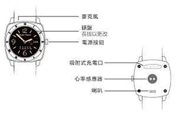

HT-880雲智能手錶使用手冊
封面

電源按鈕：長按開機/關機，短按返回主介面
錶盤：長按可更換變盤
設備連接
1.開啟手錶端/手機端藍牙。
2.啟動APP ：航通守護者。
3.按照APP指引註冊新的用戶或登錄已有帳號，選擇“藍牙手錶”，點擊搜索藍牙手錶進行搜索。
4.藍牙搜索結果頁面選擇手錶名稱“HT880”與之配對，配對成功後該介面顯示已連接成功設備。
5.航通守護者APP端顯示已連接，藍牙連接成功。
功能及使用說明介紹
1.時間同步：在手錶時間同步開關（設置—時鐘—時間同步）預設開啟前提下，與手錶藍牙連接成功後，時間和日期會與手錶系統當前時間與日期同步成功並進行更新。
2.功能鍵切換：上下滑動手錶螢幕可進行功能鍵切換。
3.找手錶：點擊APP中“找手錶”按鈕，手錶會響鈴或震動。
4.運動記錄：在手錶功能介面選擇運動，可以開啟/關閉運動，並可查看歷史記錄。
5.睡眠品質：在手錶功能介面選擇睡眠，點擊“開始”按鈕開始記錄睡眠品質。
6.心率監測：在手錶功能介面選擇心率，點擊“開始”按鈕則開始監測心率。
7.SOS功能：錶盤主介面切換至SOS介面，點擊SOS按鍵，手錶會將即時位置發送至APP，綁定手機及授權手機可即時查看，以便快速獲得援助。
8.智慧秘書：在APP中點擊“智慧秘書”按鈕，添加提醒事件，到達設定時間後手錶會自動提示。
9.久坐提醒：點擊“久坐”按鈕，設置久坐時長，點擊“確定”，達到設置時長後手錶會自動提醒。
10.返回：向右滑動螢幕，可以返回上一級介面。
11.錶盤切換：長按錶盤主介面進入錶盤切換介面，選擇所要切換的錶盤點擊“確定”。
12.語言設置功能：在設置功能項中，點擊“語言”選擇語言後，點擊“確認”保存。
13.查看藍牙地址：在設置功能中點擊關於即可查看藍牙地址。
充電介紹
設備支援主流手機適配器，為環保考慮，所以未配置電源適配器。請選擇合適的適配器給設備充電即可。
配件
1.充電線；
2.使用說明書
常見問題
1.為什麼無法開機？
答：可能由於運輸時間過長，電池耗盡電量導致，請連接充電器充電後會自動開機。
2.為什麼藍牙連接一直顯示“載入中”？
答：請確認網路正常，載入時間過長點擊手機返回鍵，重新連接藍牙即可。
3.家庭成員無法查看當前位置？
答：請確認添加成員時開啟位置服務。
4.為什麼藍牙斷開連接？
答：藍牙超出有效距離或者藍牙信號不好會斷開連接，在有效時間內會自動重新連接。信號不好時會反復自動斷連。
5.為什麼app無運動、睡覺、心率資料。？
答：請確認手錶已佩戴且已開啟運動、睡眠、心率功能；APP首頁向下滑動可刷新資料。
注意事項
1、請不要將產品浸泡在水中；
2、請將產品遠離火源、高溫高熱等極端環境；
3、本產品在斷電狀態和無網路服務時，定位功能無法工作。
售後服務
請諮詢當地的業務人員或者我司售後服務中心。
聯繫我們
有任何問題或建議，歡迎您隨時聯繫我們。
中國大陸
官方微信：航通守護者
客服QQ:3106893070
服務熱線：0755-8601 8738
中國香港
服務熱線：+852-26273380
郵箱：cs-liteguardian@castelbeidou.com
海外
郵箱: sales@castelbds.com
公司網頁:www.lite-guardian.com
服務熱線:+8675586018742